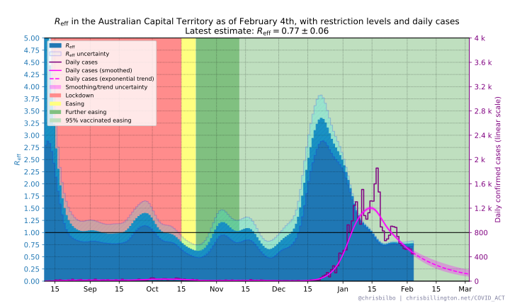
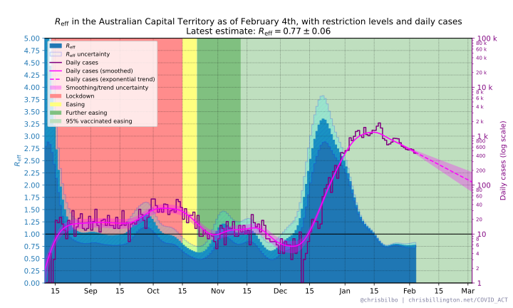
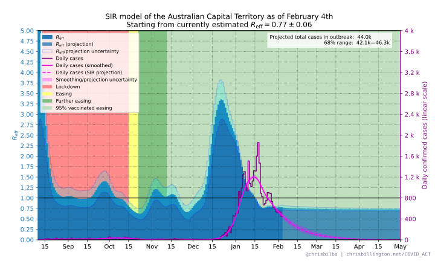
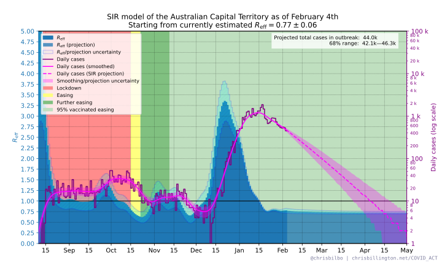
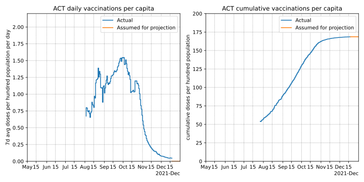

Updates daily near 12pm Canberra time
Progression of the COVID outbreak in the Australian Capital Territory
Progression of the COVID outbreak in New Zealand
Progression of the COVID outbreak in Victoria
Progression of the COVID outbreak in New South Wales
Australian vaccination rollout
The road to a COVID-free Victoria (old 2020 second wave plots)
Contents
Reff estimate from all cases
The Australian Capital Territory is currently experiencing an outbreak of COVID, due to the delta variant. Since August 12th, the Australian Capital Territory has been under lockdown restrictions.
How have restrictions in the ACT affected the spread of the virus? The below plot shows how the effective reproduction number of the virus, Reff has changed over time in the ACT, as well as how the daily cases have changed over time. A trendline shows the approximate trajectory daily case numbers would follow, were the reproduction number of the virus to remain at its current level.
The same plot is shown twice, the first with cases on a linear scale, and the second on a log scale—the latter showing how consistently the caseload has followed exponential growth (which forms a straight line on a log scale).
 Projected effect of vaccine rollout
The trendlines in the above plots simply project forward case numbers assuming that Reff remains at its current estimated value. What about the effect of vaccines? Below is a plot with the projected trend taking into account an estimated reduction of spread due to vaccination levels increasing in the ACT through the remainder of the year. This projection is a stochastic SIR model, and thus also takes into account immunity due to infections, which would decrease transmission once a non-neglibible fraction of the population has been infected.
The rate of vaccination assumed in the model is 0.1 doses per 100 population per day, up to a maximum of 84% of the population. Note that the projected rollout rate has been adjusted over time to approximately match the speed of the rollout as it has changed over time. See below for plots of how these assumed rates compare to the vaccination rollout in the ACT so far. The vaccines are assumed to reduce Reff by 40% per dose per capita—that is, overall spread is reduced by 40% for a partly-vaccinated individual and 80% for a fully vaccinated individual.
This projection shows what might be possible if all other factors affecting Reff—such as restrictions—are held constant. If the ACT eases restrictions, however, then Reff will likely increase and the effect of vaccines in reducing spread will be delayed compared to this projection. On the other hand, if contact tracing is successful in decreasing Reff, case numbers may decline faster than this projection.
The same plot is shown twice, the first with cases on a linear scale, and the second on a log scale.
 Below are plots of the vaccination rollout in the ACT to date, in terms of daily and cumulative doses per 100 population, with the assumed future rate used for the above projections also shown.
Animated projections over time
How have the above projections changed over time? Below are animated versions of the above projection, one with cases on a linear scale, and one with cases on a log scale, run on old data to show how the projections have changed over time. Note that these are not 100% identical to the projections actually made on previous days, as there have been some slight methodology changes - but they should be very close.Disclaimer on trends
The plotted trendlines are simple extrapolations of what will happen if Reff remains at its current value. This does not take into account that things are in a state of flux. As restrictions take effect, the virus should have fewer opportunities for spread, and Reff will decrease. If restrictions are eased, it may increase. Contact tracing may suppress spread to a greater or lesser degree over time. The above plots specifically showing the effect of vaccines do take into account a reduction in Reff as vaccination coverage increases, but ignore any other possible future changes in Reff.
Furthermore, when case numbers are small, the random chance of how many people each infected person subsequently infects can cause estimates of Reff to vary randomly in time. As such the projection should be taken with a grain of salt—it is merely an indication of the trend as it is right now.
Methodology
Padding, smoothing, and calculating Reff
Before calculating Reff, the daily case numbers are padded on the right and smoothed. A symmetric smoothing method is used, which is why padding on the right is necessary before smoothing.
The padding is an extrapolation based on a fit to the most recent 14 days of the 5-day moving average of daily case numbers n(t), with the following fit function:
n(t) = A exp[ k( t-ttoday) + 1/2 k̇ (t-ttoday )2 ]
where A and k are the fit parameters for the current daily caseload and exponential growth rate, and k̇ is the current expected rate of change of the exponential growth rate due to vaccines:
k̇ = 1 / ùúè (svax(ttoday) / svax(tyesterday) - 1)
where ùúè = 5 days is the approximate mean generation time of the virus, and svax(ttoday) and svax(tyesterday) are the fraction of the population not protected by vaccination from infection today and yesterday. See vaccination assumptions below for how svax(t) is calculated from vaccination numbers.
After padding, daily case numbers are smoothed with 4-day Gaussian smoothing:
nsmoothed(t) = n(t) ∗ (2ùúãTs2)-1/2 exp(-t2 / 2Ts2)
where Ts = 4 days and ∗ is the convolution operation.
Reff is then calculated for each day as:
Reff(ti) = (nsmoothed(ti) / nsmoothed(ti-1))ùúè.
The uncertainty in Reff has contributions from the uncertainty in the above-mentioned fit, as well as uncertainty in daily case numbers. The latter is considered to be Poisson noise scaled by a constant, chosen so as to make the reduced chi squared between raw and smoothed daily case numbers equal to 1.0.
Trend based on Reff only
The plot(s) with a simple extrapolation of daily case numbers, without taking into account the expected effects of vaccines, is exponential growth/decay using the most recent value of Reff and its uncertainty range:
nextrap (ti) = nsmoothed(ttoday) Reff(ttoday) (ti - ttoday) / ùúè
Projected effect of vaccines
To project the effect of vaccines on the progression of daily cases in the future, I use a stochastic SIR model. The model is run 1000 times to project daily case numbers, and the median result and 68% range of outcomes shown in the projection.
In each run of the model, a random value for each of Reff(ttoday) and nsmoothed(ttoday) is drawn from a multivariate normal distribution, using the mean values and covariance of the estimates of the two parameters.
The initial infectious population is taken to be:
i(ttoday) = ùúè nsmoothed(ttoday)
The initial recovered population r(ttoday) is taken to be the cumulative number of cases so far in the outbreak, minus the currently infectious population.
Each day, the fraction of the population susceptible to infection s(t) is taken to be
s(t) = (1 - svax(t)) [1 - (r(t) + i(t)) / N]
where svax(t) is the fraction of the population not protected from infection by vaccines (see See below for how this is calculated), and N is the total population.
Assuming that Reff is proportional to the susceptible fraction of the population, we can estimate what the reproduction number of the virus would be in the absence of any vaccines or immunity from infection:
Rnaive = Reff(ttoday) / s(ttoday)
And compute an Reff for each future day based on the susceptible fraction of the population that day:
Reff(t) = s(t) Rnaive
Each day of the model, the infectious population is increased by the number of new infections, and decreased by the number of new recoveries. The recovered population is increased by the number of new recoveries.
The number of new infections each day is drawn from a Poission distribution with mean equal to i(t) Reff(t) / ùúè.
The number of new recoveries each days is drawn from a binomial distribution with number of trials equal to the infectious population i(t), and with probability 1 / ùúè.
Vaccination assumptions
To model vaccines taking effect after a delay, daily vaccine dose numbers v(t) are convolved with a Gaussian function offset 1.5 weeks in the future, with standard deviation 0.5 weeks:
veffective(t) = v(t) ∗ (2ùúãœÉ2)-1/2 exp(-(t - Œº)2 / 2œÉ2)
where μ = 10.5 days, σ = 3.5 days, and ∗ is the convolution operation. This causes the effect of a vaccine dose to over the course of the second week after it is adminsitered, reaching nearly full effectiveness approximately two weeks after administration.
I assume that one dose of any vaccine reduces spread by 40%, and two doses reduce spread by 80%. The proportion of the population not protected by the vaccine against infection is then:
svax(ti) = 1 - 0.4 × d(ti)
where d(ti) is the cumulative number of doses per capita on each day.
Data sources and contact
Source for case numbers: covidlive.com.au
Plots/analysis by Chris Billington. Contact: chrisjbillington [at] gmail [dot] com
Python script for producing the plots can be found at GitHub.